01 · Sign-in (entry)
/auth/sign-in
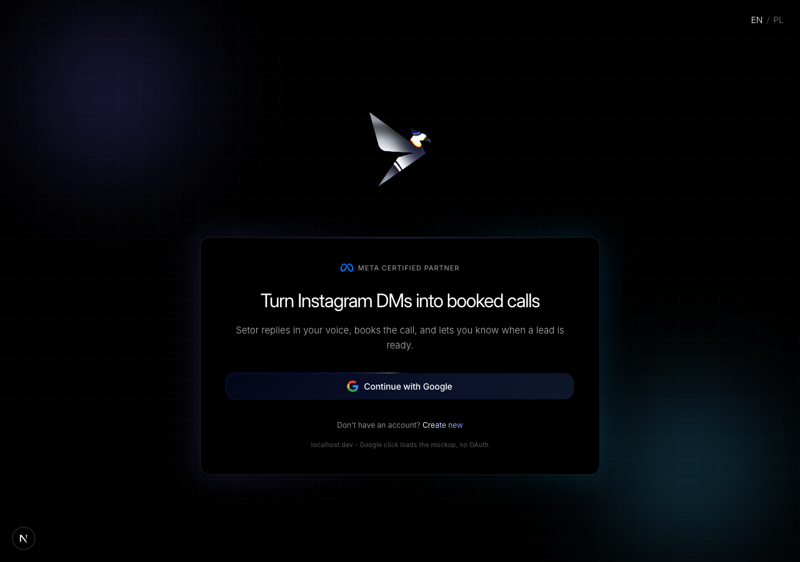
Polish: hero rewrite (was "DM Sales on Autopilot" AI-slop), DEMO MODE pill demoted from alarm yellow center to subtle gray /30 footer, "Create new" soft.
02 · Step 1 - Google account
/mockup/onboarding/1
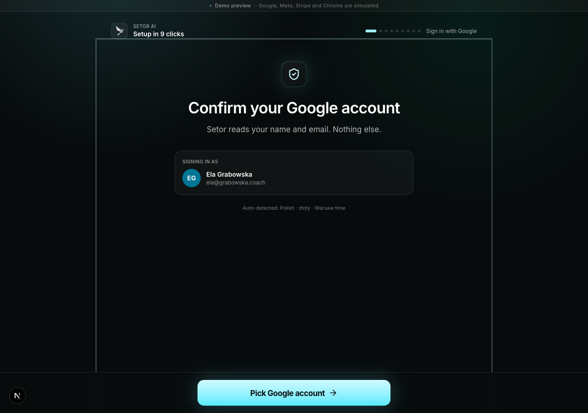
Polish: "Start with Google" (duplicate of sign-in CTA) → "Confirm your Google account". Defensive 3x "no" → proactive scope disclosure. Locale row demoted to muted hint.
03 · Step 2 - Instagram
/mockup/onboarding/2
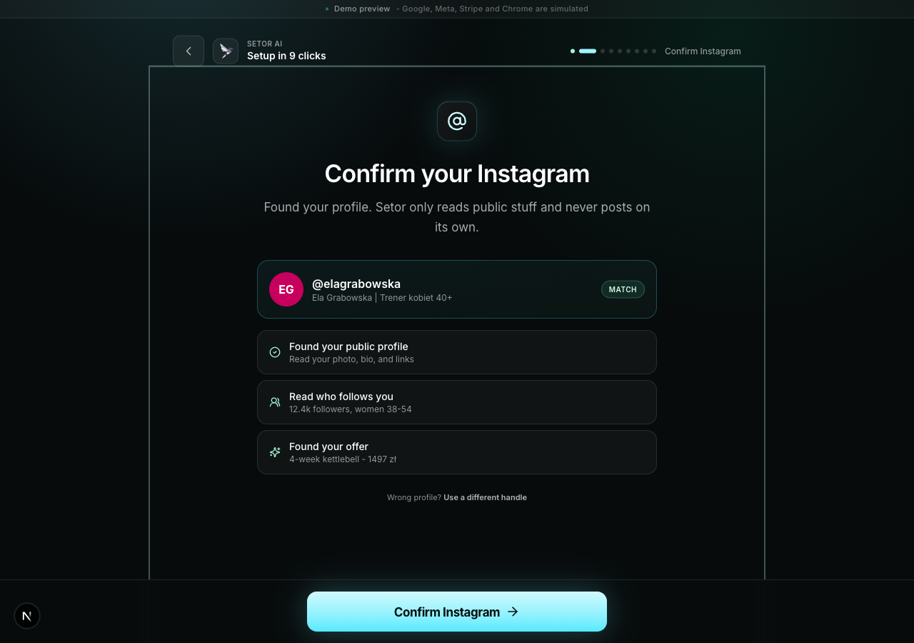
Polish: OAuth modal scopes accuracy - removed misleading "Calendar availability" from Google scope (sign-in doesn’t need calendar). IG "send and reply on your behalf" (impersonation vibe) → "Read DMs as they arrive" + "Reply to DMs you receive".
04 · Step 3 - Phone QR
/mockup/onboarding/3
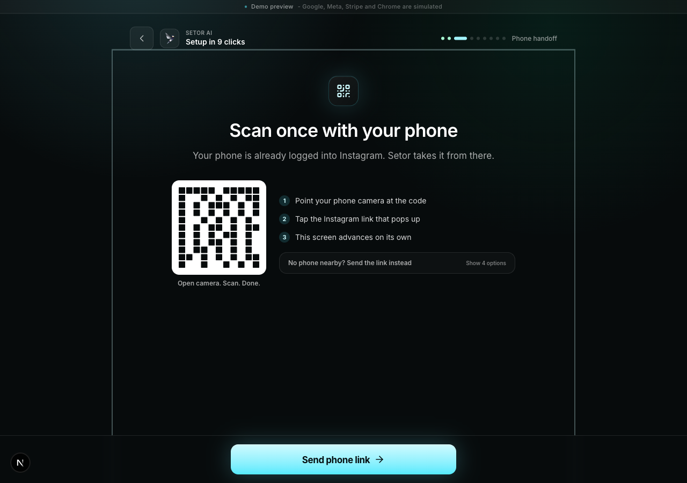
Polish: biggest fix - decision paralysis (6 visible options) → QR primary + 3-step ordered list + 4 fallback channels collapsed in disclosure. Yellow alarm warning "Do not retype your password" (defensive copy) removed entirely. Title "Connect Instagram on your phone" → "Scan once with your phone".
05 · Step 4 - Setor learning (auto-advance, full-page)
/mockup/onboarding/4
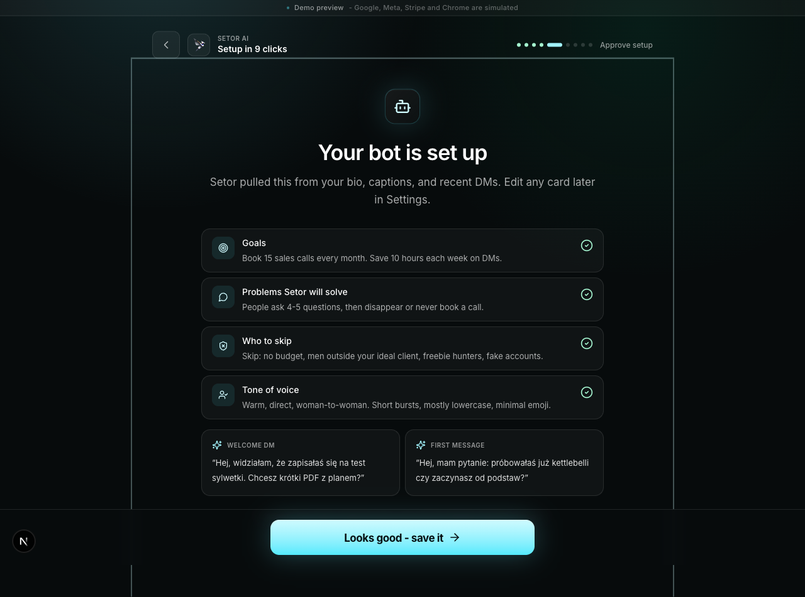
Polish: static green checks → live progress bars per stage, staggered 600ms delay. Auto-advance bottom bar gets a real progress bar with countdown ("Auto-advancing in 4s - sit tight"), kills "is it frozen?" anxiety. Footer shortened.
06 · Step 5 - Setup approval (full-page)
/mockup/onboarding/5
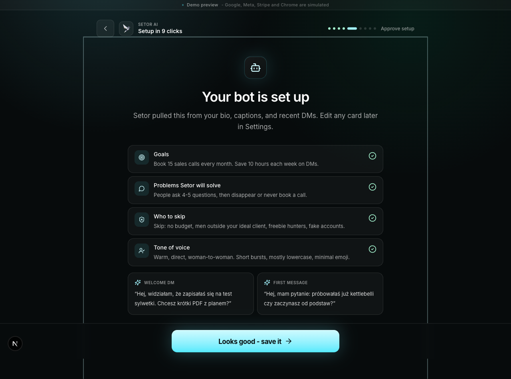
Polish: title "Your setup is ready" → "Your bot is set up". Lead concrete: "Setor pulled this from your bio, captions, and recent DMs." CTA "Looks Good" → "Looks good - save it".
07 · Step 6 - Connect tools
/mockup/onboarding/6
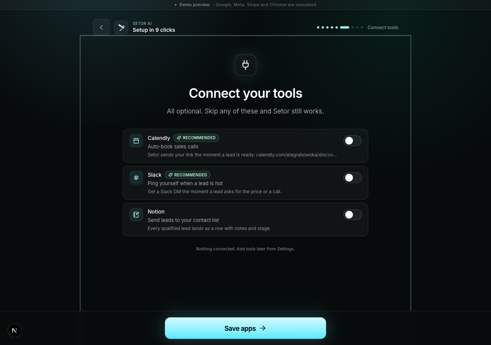
Polish: Calendly tagline benefit-led: "Setor drops your link the moment a lead is ready". Slack/Notion taglines made concrete. Both Calendly+Slack still toggle ON for 9-click happy path.
08 · Step 7 - Chrome pairing (full-page)
/mockup/onboarding/7
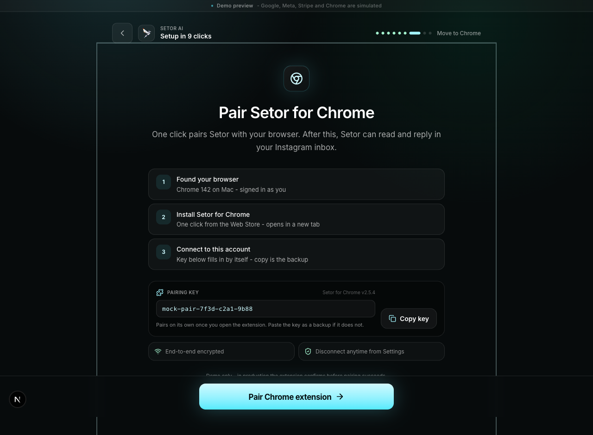
Polish: title "Move to Chrome to finish" (misleading - 2 more steps after) → "Pair Setor for Chrome". Lead benefit-led. Footer meta-commentary softened to white/45.
09 · Step 8 - 14-day trial (full-page)
/mockup/onboarding/8
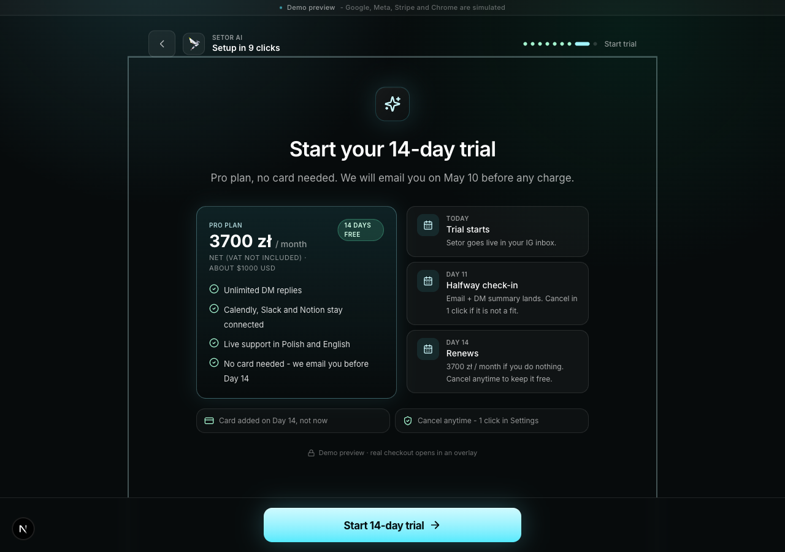
Polish: Day 14 timeline rewrite - "Auto-renew + only if you stay" double-negative → "Renews 3700 zł/mo if you do nothing. Cancel keeps it free." "No card on file" redundancy → "Card added on Day 14, not now". Stripe footer demoted to /45 opacity.
10 · Step 9 - Launch (auto-advance, full-page)
/mockup/onboarding/9
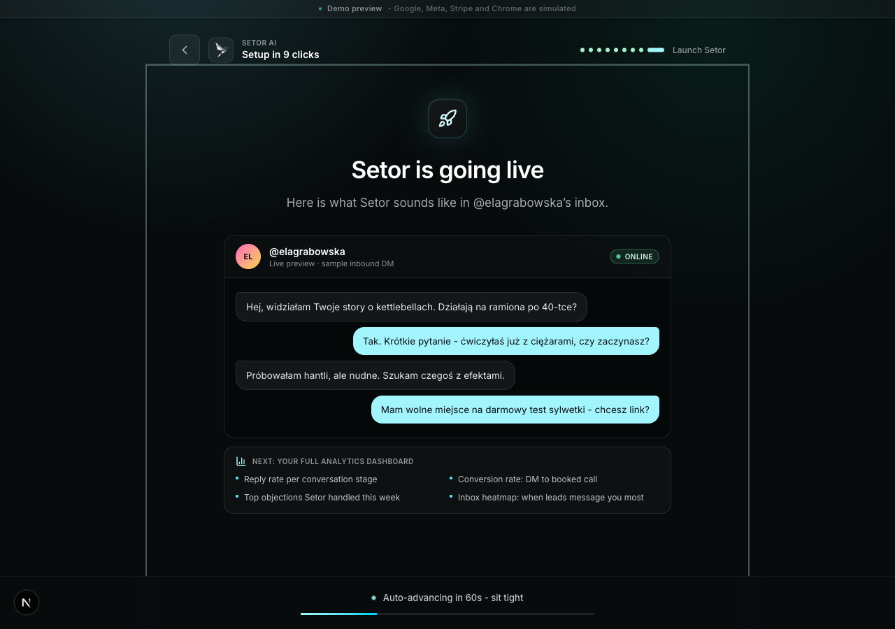
Polish: title "Setor is ready to start" → "Setor is going live". Lead concrete: "This is the kind of conversation Setor will handle in @elagrabowska’s inbox." Sub-header in chat panel: "Live preview · sample inbound DM".
11 · Done page
/mockup/onboarding/done
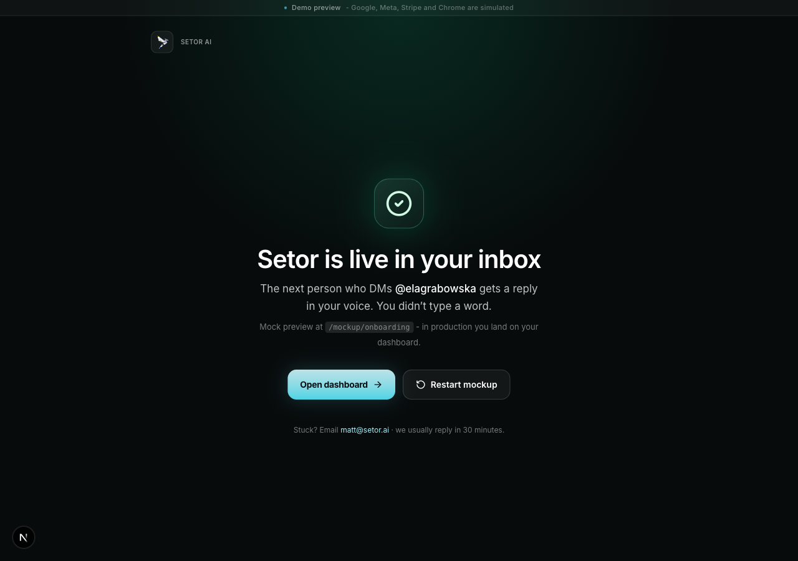
Polish: biggest emotional win. "Mockup flow complete" meta-noise → "Setor is live in your inbox". Sub: "The next person who DMs @elagrabowska gets a reply in your voice." Brand mark moved to header. Single hero green checkmark with shadow glow. Dual CTA: Open dashboard (mock) + Restart mockup. Mock banner softened from amber alarm to neutral white/55.